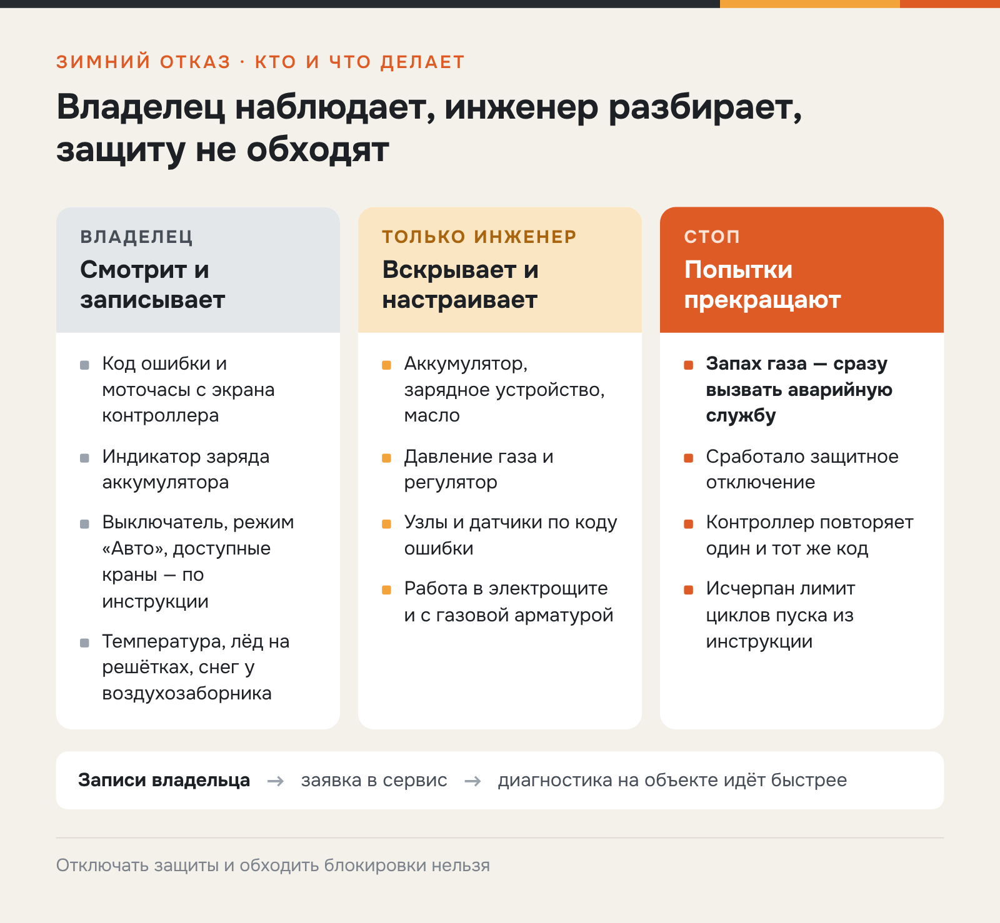
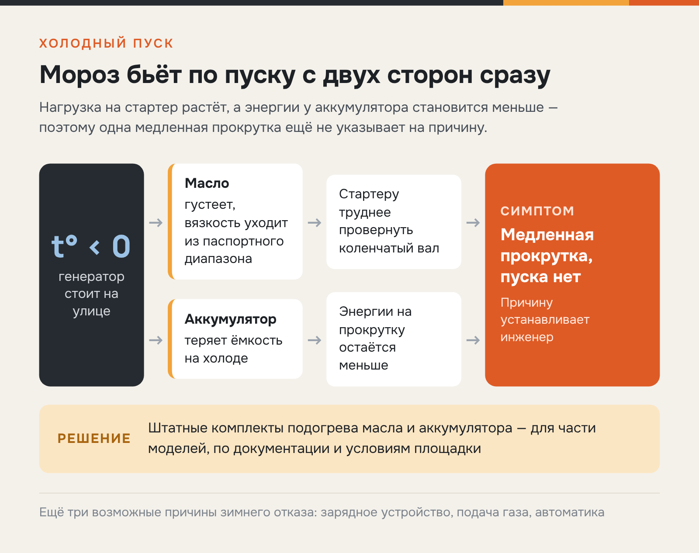
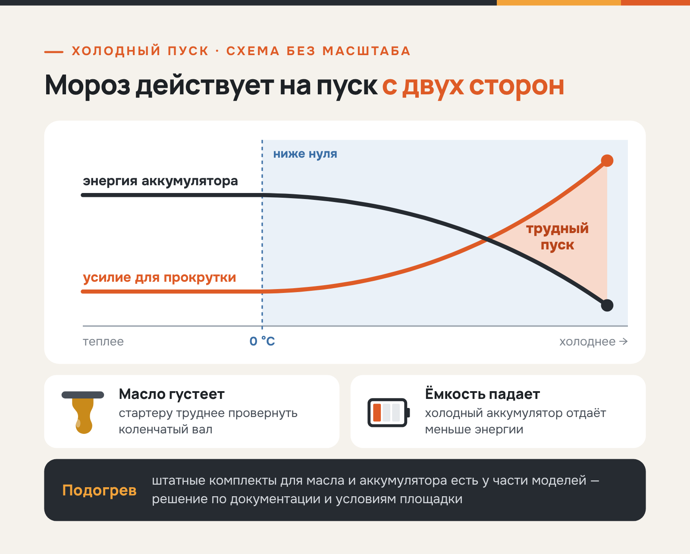
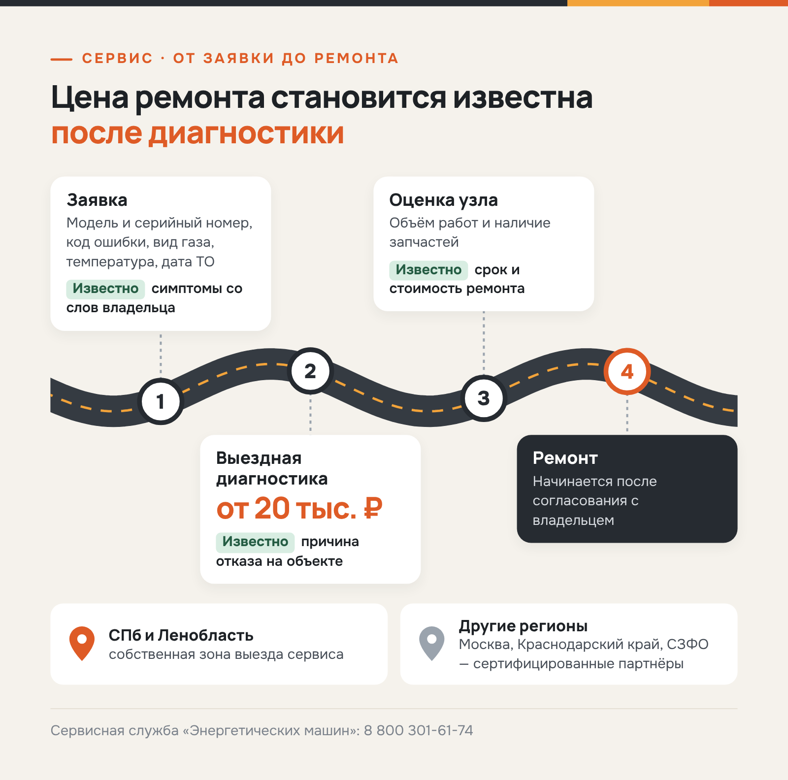

«Энергетические машины» · SEO + GEO · инструкция
Статья для блога «Энергетических машин» о зимнем запуске генератора
«Энергетические машины»en-es.ru
«Энергетические машины» подбирают, поставляют, монтируют и обслуживают газовые генераторы для частных домов и коммерческих объектов. Компания работает с 2010 года, офисы в Санкт-Петербурге, Москве и Краснодаре, в каталоге POWERON, GENERAC, MITSUI POWER и другие бренды.
- Площадка
- Блог en-es.ru
- Формат
- Статья в блог по ТЗ SEO + GEO
- Год
- 2026
С 2026 года пишу для «Энергетических машин» — компании из Санкт-Петербурга, которая с 2010 года продаёт, монтирует и обслуживает газовые генераторы. Заказчику нужен блог, который приводит клиентов из поиска и нейровыдачи. Сдаю статьи по ТЗ SEO + GEO помесячными партиями: расчёты, инструкции, сравнения и разборы норм, правки укладываются в одну-две итерации.
Задача
Встретить владельца, у которого генератор не заводится в мороз, в момент острой проблемы: дать безопасный порядок действий, развести зоны ответственности владельца и инженера и привести к заявке на диагностику и ТО.
Решение
Выстроила инструкцию по логике безопасности: прямой ответ в первом абзаце, стоп-сигналы, диагностическая таблица симптомов с колонками для владельца и инженера, чек-лист данных для заявки и FAQ. Ни одного совета по вскрытию оборудования.
Результат
Статья закрывает сервисный интент перед сезоном: в ней цены ТО и диагностики, зона выезда и телефон сервиса. Три инфографики и перелинковка на страницы ТО и ремонта, заказчик принял текст с одной правкой.
Газовый генератор не запускается зимой: что проверить и когда нужен сервис
Начните с панели управления: посмотрите сообщения контроллера, индикатор заряда аккумулятора и подачу газа — ровно настолько, насколько это допускает инструкция. Если газовый генератор не запускается зимой, вскрывать электрощит и трогать газовую арматуру нельзя: код ошибки и условия отказа передают сервисному инженеру.
Что можно проверить владельцу без разборки
Осмотр до приезда инженера ограничен тем, что видно снаружи и на панели. Диагностику он не заменяет, но помогает её сократить. Зафиксировать стоит четыре параметра:
- Индикация контроллера. Запишите сообщение или код ошибки с экрана и показания моточасов.
- Заряд аккумулятора. Ориентируйтесь на штатный индикатор и сигналы контроллера о низком напряжении.
- Органы управления. Сверьте с инструкцией положение выключателя, режим «Авто» и состояние кранов, доступных владельцу.
- Условия на площадке. Отметьте наружную температуру, обледенение решёток и снег у воздухозаборника.
Попытки пуска прекращают, если чувствуется запах газа, срабатывает защитное отключение или контроллер раз за разом показывает один и тот же код. Отключать защиты и обходить блокировки нельзя: автоматика прерывает запуск, когда продолжать его опасно для двигателя и газовой части.

Всё, что находится под кожухом, остаётся за сервисным инженером: аккумулятор с зарядным устройством, масло, давление газа и регулятор, датчики. Владельцу достаточно записать увиденное — эти сведения понадобятся при обращении в сервис.
Почему пуск осложняется при низкой температуре
Если генератор плохо заводится в мороз, за отказом обычно стоит одна из пяти причин: разряженный аккумулятор, неисправное зарядное устройство, масло с вязкостью вне паспортного диапазона, сбой в подаче газа или ошибка автоматики. По одному симптому причину не определить: медленная прокрутка встречается и при низком заряде батареи, и при загустевшем масле. Объяснение «замёрз газ» подтверждается далеко не всегда.
Сопоставить признаки помогает таблица: в ней для каждого симптома указано, что может сделать владелец, что проверяет инженер и в какой момент пора остановиться.
| Симптом | Проверка владельца по инструкции | Что проверяет инженер | Когда прекратить попытки |
|---|---|---|---|
| Стартер вращается медленно, пуска нет | Индикатор заряда, сообщения контроллера | Аккумулятор, зарядное устройство, масло | По лимиту циклов из инструкции |
| Контроллер показывает код ошибки | Записать код, сверить с инструкцией | Узел по коду ошибки, датчики | Сразу, если код отнесён к критическим |
| Пуск проходит, двигатель глохнет | Сообщения контроллера, доступные краны | Давление газа, регулятор, автоматика | После второго повторения отказа |
| Запах газа у корпуса | Ничего не проверять самостоятельно | Герметичность соединений | Немедленно, с вызовом аварийной службы |
При любом симптоме роли распределены одинаково: владелец наблюдает и записывает, а вскрытие корпуса, настройка газовой арматуры и работа в щите остаются за специалистом.

Какие неисправности владелец может устранить сам, а какие требуют выезда инженера, видно по типовым случаям из сервисной практики — они собраны в обзоре ТО, ремонта и запчастей для газовых генераторов.
Как подготовить генератор к морозам
Подготовка газового генератора к зиме начинается с диагностики: специалист оценивает машину до холодов, пока замечания можно устранить в плановом порядке. В план входят четыре пункта:
- Плановое обслуживание. Регламентное ТО газовых генераторов проводят раз в год или каждые 100 моточасов, стоимость — от 20 тыс. ₽ за визит.
- Проверка аккумулятора. Оценка заряда и зарядного устройства, при необходимости — замена батареи.
- Пробный запуск. Пуск под нагрузкой, контроль перехода на резерв и возврата на сеть.
- Проверка автоматики. Тест контроллера и настроек выполняет сервисная служба.
Отдельного решения требует подогрев генератора. При отрицательной температуре масло густеет, и стартеру труднее провернуть коленчатый вал, а ёмкость аккумулятора на холоде снижается. Оба эффекта складываются: двигатель нужно провернуть с большим усилием, а энергии для этого у батареи меньше.

Поэтому для установки на улице заранее продумывают, как поддерживать рабочую температуру узлов в период простоя. Штатные комплекты подогрева масла и аккумулятора предусмотрены для части моделей и ставятся на уже смонтированное оборудование. Нужен ли такой комплект, решают по документации конкретной модели и условиям площадки.
Когда нужен инженер и что сообщить при обращении
В сервис обращаются, когда всё, что разрешает инструкция, уже сделано. Для заявки понадобятся:
- марка, модель и серийный номер;
- код ошибки с панели управления;
- вид газа: магистральный или сжиженный;
- наружная температура в момент отказа;
- дата последнего ТО;
- краткое описание отказа.
Дальше работа идёт в два этапа. Сначала выездная диагностика газового генератора: инженер устанавливает причину на объекте, стоимость — от 20 тыс. ₽. Затем согласуют ремонт газовых генераторов: срок и стоимость называют после того, как инженер оценит узел и проверит наличие запчастей.

Санкт-Петербург и Ленинградская область — собственная зона выезда сервисной службы «Энергетических машин». В других регионах, включая Москву, Краснодарский край и субъекты СЗФО, работы выполняют сертифицированные партнёры компании.
Вопросы и ответы
Собрали короткие ответы на вопросы, которые владельцы чаще всего задают при зимних отказах.
Можно ли повторно запускать генератор после нескольких неудачных попыток?
Да, в пределах числа циклов, указанного в инструкции. Каждый новый цикл разряжает аккумулятор, поэтому после лимита попытки прекращают и оформляют заявку в сервис.
Всегда ли нужен комплект подогрева для зимы?
Нет. Комплекты предусмотрены для части моделей, решение принимают по документации и условиям площадки.
Куда обращаться, если генератор показывает ошибку в мороз?
В сервисную службу «Энергетических машин» по телефону 8 800 301-61-74. Укажите в заявке модель, код ошибки и место установки — так инженер сможет подготовиться к выезду на диагностику.